Hydropneumatic Suspension, Quarter-Car Model
The commands below simulate a model of a quarter-car vehicle with a hydropneumatic suspension. Tests include different road height inputs and a test of the ride height system. Plots of the simulation results show how the suspension performs in soft and stiff configurations.
Contents
- Step 1: Open Model
- Step 2: Configure model for pulse test with soft suspension
- Step 3: Run simulation
- Step 4: Explore simulation results
- Step 5: Configure model for pulse test with stiff suspension
- Step 6: Run simulation
- Step 7: Explore simulation results
- Step 8: Plot response to pulse input for both settings
- Step 9: Configure model for chirp test with soft suspension
- Step 10: Run simulation
- Step 11: Explore simulation results
- Step 12: Configure model for chirp test with stiff suspension
- Step 13: Run simulation
- Step 14: Explore simulation results
- Step 15: Plot chirp input response for both settings
- Step 16: Configure model for triangle test with soft suspension
- Step 17: Run simulation
- Step 18: Explore simulation results
- Step 19: Configure model for triangle test with stiff suspension
- Step 20: Run simulation
- Step 21: Explore simulation results
- Step 22: Configure suspension for ride height test
- Step 23: Run simulation
- Step 24: Plot ride height test results: Flow rates
- Step 25: Plot ride height test results: Chamber volumes
Step 1: Open Model
This can be done from the project shortcut or MATLAB Command line.
mdl = 'testrig_AirOilPiston_multibody';
open_system(mdl)
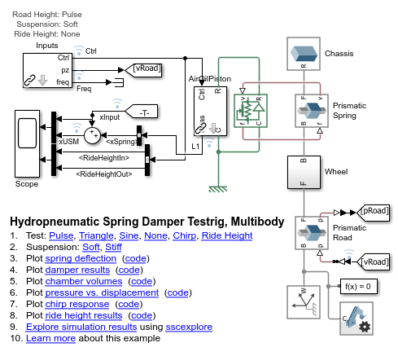
Step 2: Configure model for pulse test with soft suspension
This can be done by adjusting the model or from the MATLAB Command line. This step selects the pulse test and configures the suspension to use its soft setting (larger volume gas spring).
testrig_AirOilPiston_test_config(mdl,'Pulse','Soft');
Step 3: Run simulation
This can be done from Simulink or from the MATLAB command line.
sim(mdl)
Step 4: Explore simulation results
Use the Simulink Data Inspector to plot the following quantities:
testrig_AirOilPiston_plot1xspring
% Save results for comparison plot
logsout_Soft_xRoad = logsout_xInput;
logsout_Soft_xUSM = logsout_xSpring+logsout_xInput;
logsout_Soft_Time = logsout_Time;
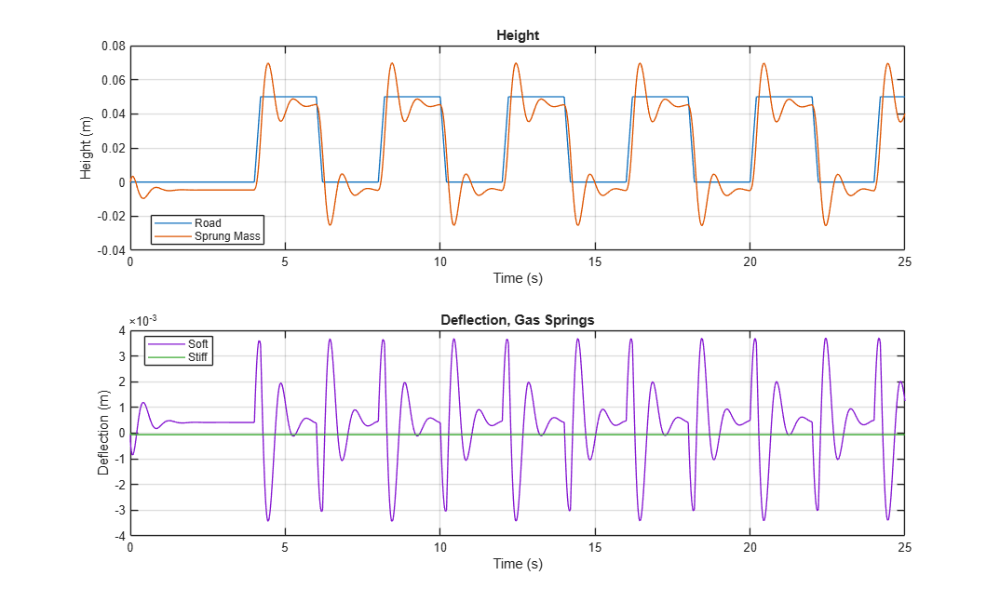
Step 5: Configure model for pulse test with stiff suspension
This can be done by adjusting the model or from the MATLAB Command line. This step selects the pulse test and configures the suspension to use its stiff setting (smaller volume gas spring).
testrig_AirOilPiston_test_config(mdl,'Pulse','Stiff');
Step 6: Run simulation
This can be done from Simulink or from the MATLAB command line.
sim(mdl)
Step 7: Explore simulation results
Use the Simulink Data Inspector to plot the following quantities:
testrig_AirOilPiston_plot1xspring
% Save results for comparison plot
logsout_Stiff_xUSM = logsout_xSpring+logsout_xInput;
logsout_Stiff_Time = logsout_Time;
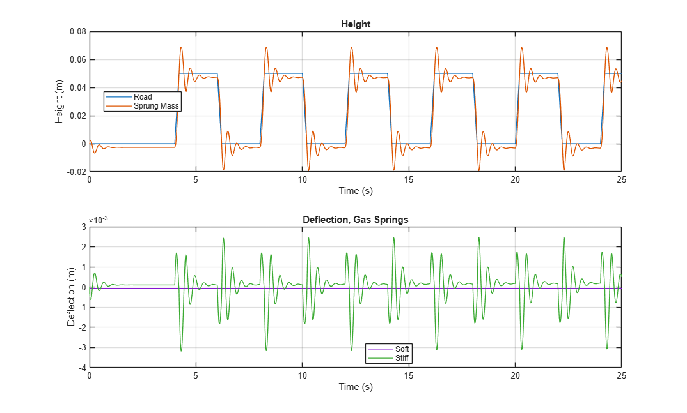
Step 8: Plot response to pulse input for both settings
This plot shows the response for the suspension system with the soft spring and the stiff spring.
figure(999); plot(logsout_Soft_Time, logsout_Soft_xUSM, 'DisplayName', 'Soft Setting'); hold on; plot(logsout_Stiff_Time, logsout_Stiff_xUSM, 'DisplayName', 'Stiff Setting'); plot(logsout_Soft_Time, logsout_Soft_xRoad, 'k', 'DisplayName', 'Road Input'); hold off; xlabel('Time (s)'); ylabel('Response'); title('Comparison of Soft and Stiff Settings'); legend show;
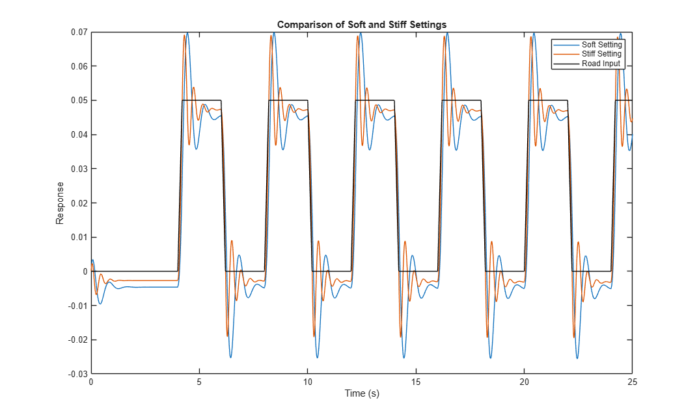
Step 9: Configure model for chirp test with soft suspension
This step selects the chirp test and configures the suspension to use its soft setting (larger volume gas spring).
testrig_AirOilPiston_test_config(mdl,'Chirp','Soft');
Step 10: Run simulation
This can be done from Simulink or from the MATLAB command line.
sim(mdl)
Step 11: Explore simulation results
Use the Simulink Data Inspector to plot the following quantities:
testrig_AirOilPiston_plot1xspring
% Save results for comparison plot
logsout_Soft_xRoad = logsout_xInput;
logsout_Soft_xUSM = logsout_xSpring+logsout_xInput;
logsout_Soft_Time = logsout_Time;
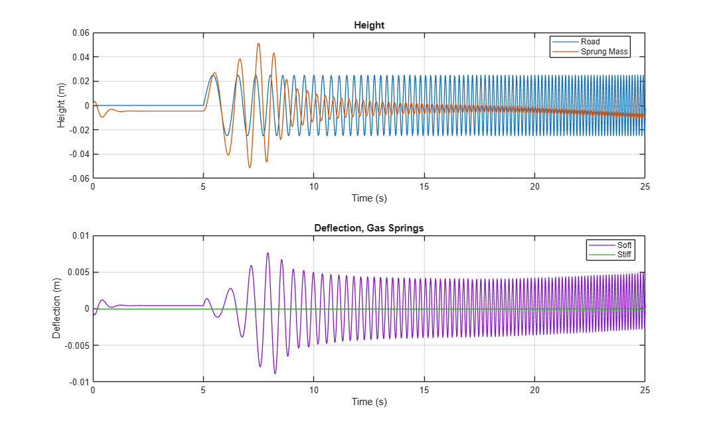
Step 12: Configure model for chirp test with stiff suspension
This step selects the chirp test and configures the suspension to use its stiff setting (smaller volume gas spring).
testrig_AirOilPiston_test_config(mdl,'Chirp','Stiff');
Step 13: Run simulation
This can be done from Simulink or from the MATLAB command line.
sim(mdl)
Step 14: Explore simulation results
Use the Simulink Data Inspector to plot the following quantities:
testrig_AirOilPiston_plot1xspring logsout_Stiff_xUSM = logsout_xSpring+logsout_xInput; logsout_Stiff_Time = logsout_Time;
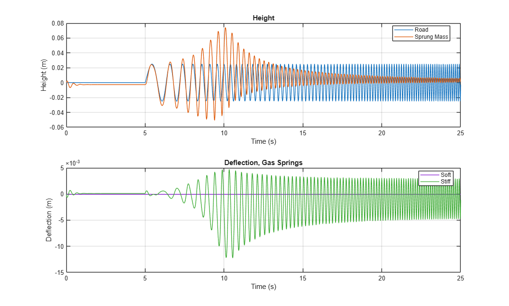
Step 15: Plot chirp input response for both settings
figure(998); plot(logsout_Soft_Time, logsout_Soft_xUSM, 'DisplayName', 'Soft Setting'); hold on; plot(logsout_Stiff_Time, logsout_Stiff_xUSM, 'DisplayName', 'Stiff Setting'); plot(logsout_Soft_Time, logsout_Soft_xRoad, 'k', 'DisplayName', 'Road Input'); hold off; xlabel('Time (s)'); ylabel('Response'); title('Comparison of Soft and Stiff Settings'); legend show;
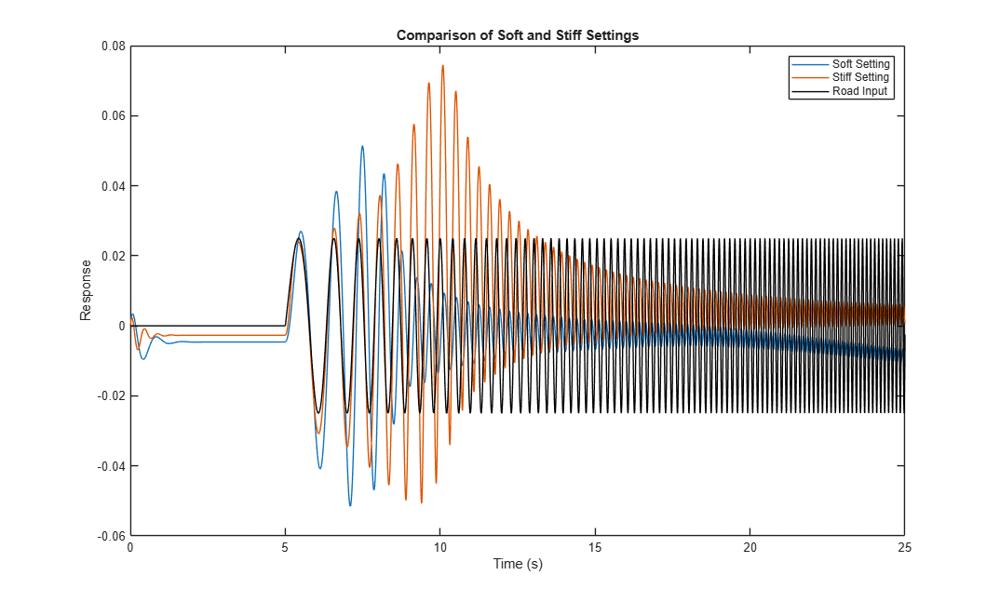
Step 16: Configure model for triangle test with soft suspension
This step selects the triangle test and configures the suspension to use its soft setting (larger volume gas spring).
testrig_AirOilPiston_test_config(mdl,'Triangle','Soft');
Step 17: Run simulation
This can be done from Simulink or from the MATLAB command line.
sim(mdl)
Step 18: Explore simulation results
Use the Simulink Data Inspector to plot the following quantities:
testrig_AirOilPiston_plot5pressvsdisp
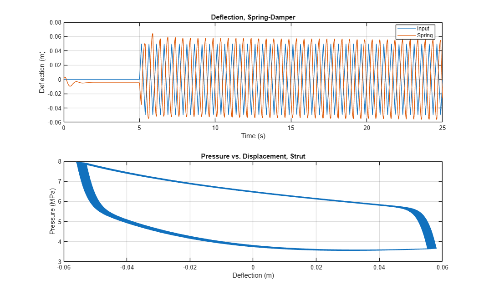
Step 19: Configure model for triangle test with stiff suspension
This step selects the triangle test and configures the suspension to use its stiff setting (smaller volume gas spring).
testrig_AirOilPiston_test_config(mdl,'Triangle','Stiff');
Step 20: Run simulation
This can be done from Simulink or from the MATLAB command line.
sim(mdl)
Step 21: Explore simulation results
Use the Simulink Data Inspector to plot the following quantities:
testrig_AirOilPiston_plot5pressvsdisp
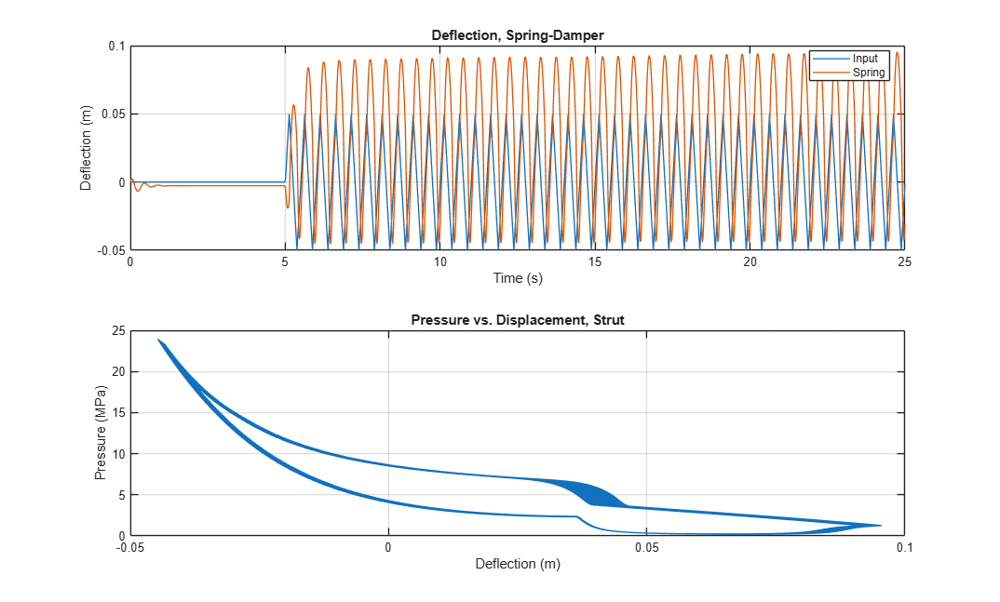
Step 22: Configure suspension for ride height test
testrig_AirOilPiston_test_config(mdl,'Ride Height','Soft');
Step 23: Run simulation
This can be done from Simulink or from the MATLAB command line.
sim(mdl)
Step 24: Plot ride height test results: Flow rates
testrig_AirOilPiston_plot3qrideheight
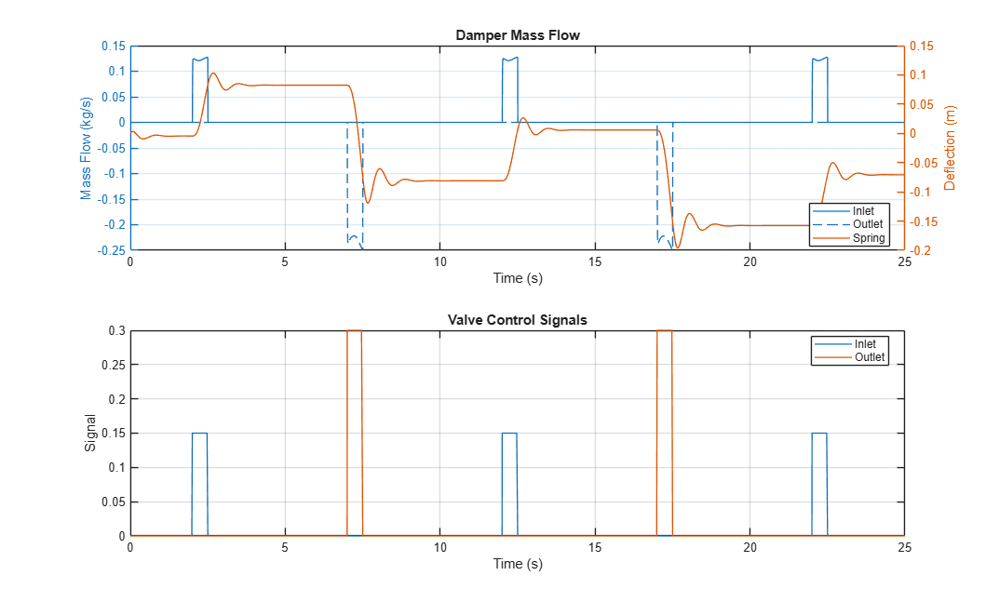
Step 25: Plot ride height test results: Chamber volumes
testrig_AirOilPiston_plot4volchamb
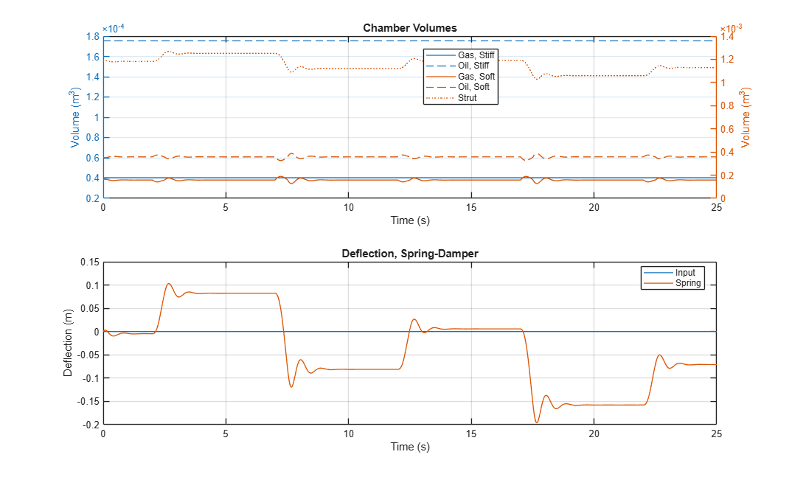